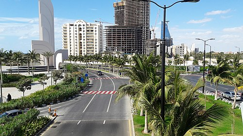

Jeddah
Jeddah is a city in the Hejaz region of Saudi Arabia and the country's commercial center. With a population of about 3.5 million people (as of 2020), Jeddah is the largest city in Makkah Province, the second-largest in Saudi Arabia (after the capital Riyadh), and the tenth-largest in the Arab world. Jeddah Islamic Port, located on the Red Sea, is the second-largest and second-busiest seaport in the Arab world.
Jeddah is the principal gateway to Mecca, the holiest city in Islam, located just 65 kilometres (40 mi) to the east, while Medina, the second-holiest city, is located 360 kilometres (220 mi) to the north.
Economically, Jeddah is focusing on further developing capital investment in scientific and engineering leadership within Saudi Arabia, and the Middle East. Jeddah was independently ranked fourth in the Africa – Mid-East region in terms of innovation in 2009 in the Innovation Cities Index.
• For more information go to wikipedia page